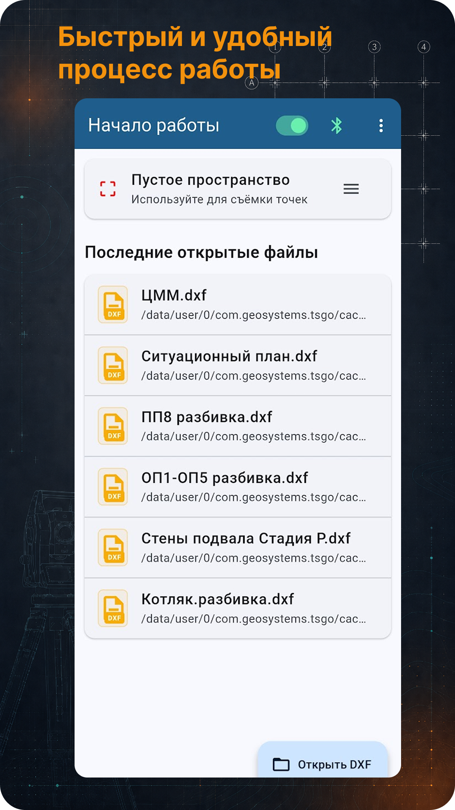

Тахеометр
Подключение к поддерживаемым моделям и получение измеренной точки с прибора.
TS Go!
Открой DXF-разбивочник, подключи тахеометр, измерь точку и получи результат относительно проекта: линия, отступ, высота, точка, съёмка и вынос в натуру.
Полевой инструмент для геодезиста: тахеометр, проект, DXF, разбивка и контроль.
Возможности
Приложение сделано под простой полевой сценарий: открыть проект, выбрать объект, измерить точку и сразу понять результат промера.
Подключение к поддерживаемым моделям и получение измеренной точки с прибора.
Открытие разбивочника, отображение CAD-объектов, работа с линиями, точками, дугами и окружностями.
Параметры относительно проекта: длина, отступ, выше/ниже, вправо/влево, вперёд/назад и доворот.
Создание рабочих базовых линий по точкам и быстрый реверс направления линии.
Небольшое рабочее пространство для съёмки точек, сохранения, экспорта и очистки.
Контроль высоты относительно проектной 3D-поверхности развивается в текущих версиях.
Скриншоты
Карусель можно прокручивать горизонтально.



Доступ
Приложение доступно в RuStore и в виде APK на официальном сайте. Условия доступа отображаются внутри приложения. PRO-доступ предоставляется на срок без автопродления.